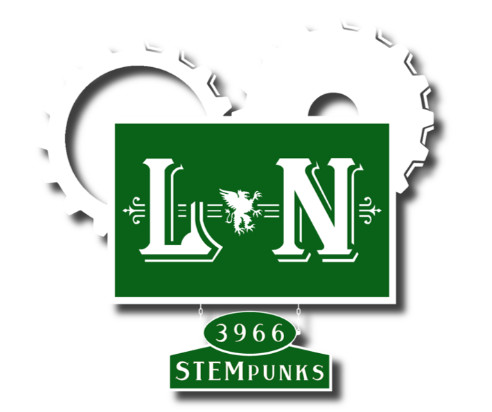
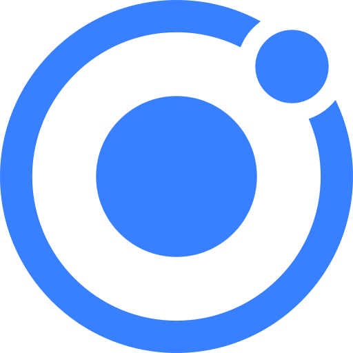

<ion-header>
  <ion-navbar>
    <ion-title>
      About
    </ion-title>
  </ion-navbar>
</ion-header>

<ion-content padding class="about">
  
  <ion-card>
    <ion-card-content>
        <h1 class="card-h1" margin-bottom>This app was developed by the L&N STEMpunks, Team 3966, to help teams find events in their areas and spread information in a simple and easy to find way.</h1>
        <h1 class="card-p">This app was created using the following:</h1>
        <ion-row class="imgs" align-items-center>
          <ion-col col-4><a href="https://ionicframework.com/"></a></ion-col>
          <ion-col col-4><a href="https://www.mapbox.com/"></a></ion-col>
          <ion-col col-4><a href="https://www.thebluealliance.com/"></a></ion-col>
        </ion-row>
    </ion-card-content>
  </ion-card>
  
</ion-content>
